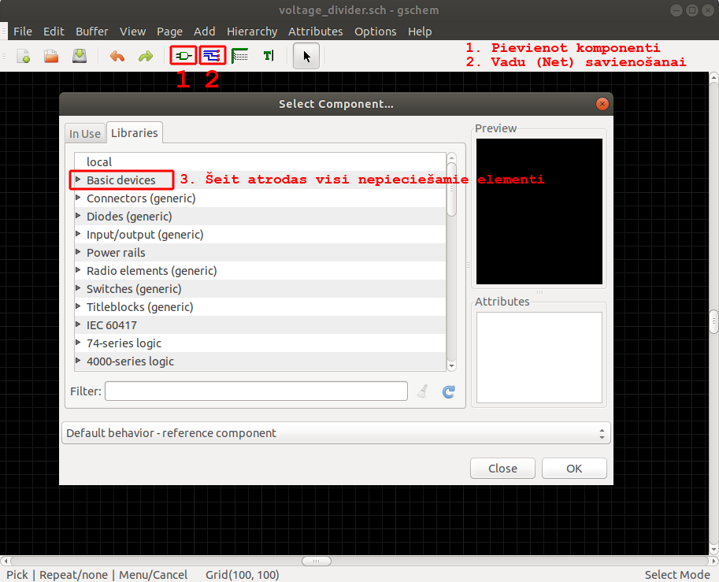
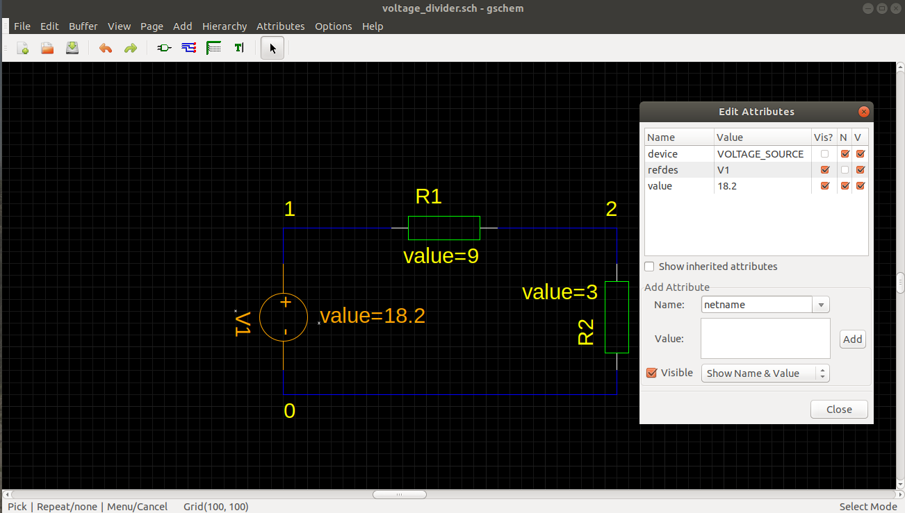
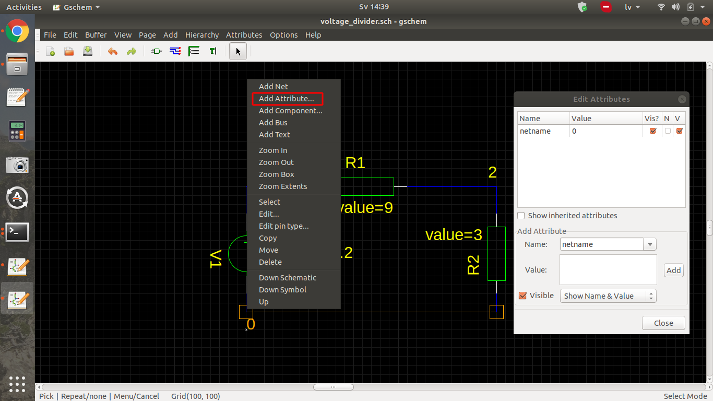
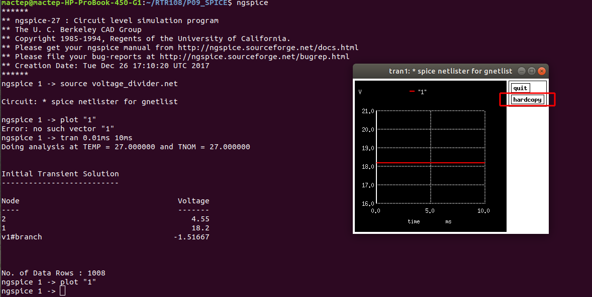

Rīgas tehniskā universitāte Elektronikas un telekomunikāciju fakultāte Elektronikas pamatu katedra
Sprieguma dalītājs
LaTex apgūšana (P10_P11 uzdevums)
Vladimirs Fedorovičs REBM02, 041RDB182
2020. gada jūlijs
Darba mērķi
Aprakstīt sprieguma dalītāja shēmas izveidi ar gEDA rīkiem P09 uzdevumam.
Iemācīties veidot vienkāršus LaTeX dokumentus.
Iemācīties ievietot attēlus un tabulas.
Dotie parametri
Elements
Vērtība
R1, Ω
9,0
R2, Ω
3,0
V1, V
18,2
Shēmas zīmēšana gschem
Lai atvērtu programmu ierakstīsim Linux terminālā komandu gschem.
Tālāk zīmēsim tāpat ka LTSpice, skatīties zemāk:  Piezīme. Ar 1. ikonu pievienosim nepieciešamos elementus un ar 2. ikonu – savienosim elementus savās starpā.
Vērtību un nosaukumu piešķiršana vizualizēta zemāk:  Piezīme. Klikšķinot uz elementa ar labo peles taustiņu atvēras parametru lodziņš, kur jau pievienojam paremetrus izvēloties atbilstošos Add Attribute zonā un pievienojot ar pogu Add: refdes – emelenta nosaukums, value – vērtība.
Tad pievienojam ZEMES punktu, klikšķinot ar labo peles taustiņu uz vēlamā mezgla un izvēloties no saraksta [Add attribute...], value ierakstam "0":
 Piezīme. Tādā veidā pievienojam arī pārējos mezglus piešķirot tiem nosaukumus, piem., "1" un "2".
Saglabāsim failu ar nosaukumu voltage_divider.sch.
Lai saglabātu shēmu kā attēlu, spiežam File un [Write Image...]
un izvēlamies nepieciešamo formātu (PNG, EPS, utt.):
Šādi izskatās noeksportēts attēls:
Iziesiem no programmas aizvērot to ar krustiņu (vai kā savādāk).
Shēmas simulēšana ngspice
Lai varētu nodarboties ar simulāciju, sākumā izveidosim failu ar paplašinājumu *.net. Terminālā ierakstīsim komandu [gnetlist] ar paramatiem [-g spice -0 GalaFailaNosaukums.net IzejasFailaNosaukums.sch]. Mūsu gadījumā IzejasFailaNosaukums.sch būs voltage_divider.sch
Palaižam programmu ar komandrindiņu ngspice.
Tālāk ielādējam mūsu *.net failu iekšā ar komandu: source GalaFailaNosaukums.net.
Tad tāpat kā LTSpice izmantojam tran direktīvu. Šeit tā būs komandrindiņa: tran 0.01ms 10ms.
Tad uzzīmējam pirmā un otrā mezgla spriegumus izmantojot komandas plot "1" un plot "2" un saglabājam tos nospiežot atbilstošo podziņu hardcopy:

Lai saglabāt krāsainu attēlu, tad pirms plot komandas nepieciešams ievadīt komandu set hcopypscolor = 0.